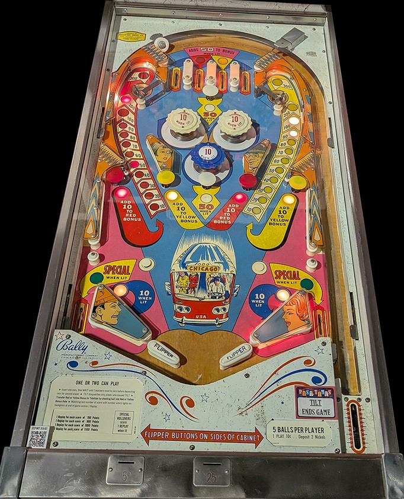

The primary progression on Bus Stop is the red and yellow bonuses built up along the sides of the game (red on the left, yellow on the right). Red and yellow mushroom bumpers across the middle of the game score 10 points and also add 10 points to the red or yellow bonus respectively. The second and third top lanes from left can also advance bonus: the second top lane scores 50 points and adds 50 to the red bonus when lit, and the third top lane scores 50 points and adds 50 to the yellow bonus when lit. Which of these two top lanes is lit alternates any time a 50-point switch is scored anywhere in the game. Making an unlit second or third top lane, or making the leftmost or rightmost top lanes at any time, scores 10 points and does not advance bonus.
White mushroom bumpers score 10 points, or 50 when lit. When the red bonus is at 80, 100, 120, 140, 160, or 180 points, the lower white mushroom bumper is lit, and when the yellow bonus is at 80, 100, 120, 140, 160, or 180 points, the upper white mushroom bumper is lit. Making an upper saucer collects the corresponding bonus (red on left, yellow on right) and resets that bonus to 10 points. A single bonus can be increased as high as 300 points.
Pop bumpers and slingshots score 1 point or 10 when lit. They appear to be lit intermittently using a dynamic difficulty system, similar to many mid-60s Bally games, where switch hits around the game cause the bumpers and slingshots to turn on and off seemingly randomly, with the game being increasingly less likely to light the pops or slings as the game gives out increasingly more Specials to players.
There are no in lanes. Flippers back up directly to the slingshots. The flipper gap is quite wide even compared to other mid-1960s games. Out lanes score 50 points or Special when lit. I have never seen the Special be lit, but it is likely available either when both bonuses are maxed out at 300 points, or when both white mushroom bumpers are lit.
This guide is largely based on footage taken by Steel Valley Pinball at Past Times Arcade in Girard, OH.
The below picture of Bus Stop's playfield was taken from the Open Pinball Database.
